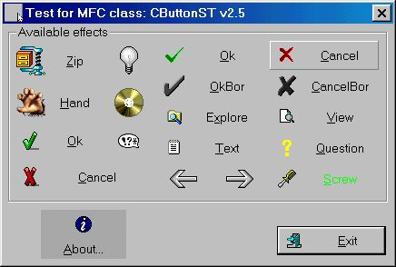
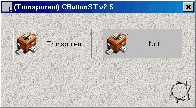

ButtonST - плоские кнопки
Автор: Davide Calabro'.
Требования: Win95/98 NT4, VC 5.0
 
Описание
CButtonST это класс, наследуемый от MFC класса CButton.
С этим классом в Вашем приложении можно
использовать как стандартные кнопки, так и
необычные и плоские кнопки.
Возможности CButtonST:
- Стандартные свойства CButton
- поддержка иконок 16x16 32x32 48x48 16 и 256 цветов
- Поддержка прозрачных кнопок
- Изменение вида кнопки на лету с плоской в
стандартную
- Кнопка может иметь две иконки. Одна, когда
курсор мыши на кнопке и другая, когда курсор за
пределами кнопки.
- Возможнось использования в DLL
- Возможность динамического создания
- Каждая кнопка может иметь собственный курсор
- компилировалось в Visual C++ v5.0
- Full source code included!
- It's free!
Как включить CButtonST в Ваше приложение
Добавьте в Ваш проект следующие файлы:
BtnST.h
BtnST.cpp
С помощью редактора диалога создайте стандартную кнопку и назовите, например, IDOK
(Вам не нужно создавать собственный прорисовщик кнопки) и создайте переменную член:
CButtonST m_btnOk;
Теперь с помощью редактора ресурсов, создайте иконку и назовите, например, IDI_OK256
Так же Вы можете импортировать её из уже существующей, такой как в демопроекте
(т.e. 32x32x256_Ok.ico).
Используйте иконки размером 32x32 пикселей. Иконки друго размера будут отображаться
неправильно.
Теперь свяжите кнопку с CButtonST. В процедуре OnInitDialog:
// Вызываем базовый метод
CDialog::OnInitDialog();
// Создаём кнопку IDOK
m_btnOk.SubclassDlgItem(IDOK, this);
// Устанавливаем иконку для кнопки
m_btnOk.SetIcon(IDI_OK256);
Вы можете использовать для одной кнопки. Первая иконка отображается когда
курсор мышки находится на кнопке. Вторая иконка отображается когда
курсор мышки находится за пределами кнопки. Если Вы используете одну и ту же иконку,
но одну цветную, а другую чёрно белую, то получится красивый эффект!
// Добавляем две иконки
m_btnOk.SetIcon(IDI_OK256, IDI_OK256_BW);
Иконки должны быть одинакового размера!
По умолчанию на кнопке иконка будет располагаться слева, а текст справа.
Если Вам нужно, чтобы иконка располагалась вверху, а текст внизу, то
необходимо установить выравнивание кнопки:
// Выравниваем иконку вертикально
m_btnOk.SetAlign(CButtonST::ST_ALIGN_VERT);
Так же, по умолчанию, кнопка будет иметь плоский стиль. Если Вам нужна
стандартная кнопка, то используйте следующий код:
// Рисуем стандартную кнопку
m_btnOk.SetFlat(FALSE);
Для плоских кнопок по умолчанию высвечивается бордюр, когда курсор мышки проходит
над кнопкой. Вы можете запретить этот эффект (в примере это кнопка с CD-ROM!)
// Не прорисовывать бордюр для кнопки
m_btnOk.DrawBorder(FALSE);
Для каждой кнопки можно установить собственные цвета.
// Устанавливаем цвета кнопок
COLORREF crStandard = ::GetSysColor(COLOR_BTNFACE);
m_btnOk.SetInactiveBgColor(crStandard - RGB(20,20,20));
m_btnOk.SetActiveBgColor(crStandard + RGB(20,20,20));
m_btnOk.SetInactiveFgColor(RGB(0,255,0));
m_btnOk.SetActiveFgColor(RGB(255,0,0));
Каждая кнопка может иметь свой курсор.
Например, кнопка, которая запускает интернет браузер, изменяет курсор мышки
на ручку, при наведении на неё курсора!
// Устанавливаем ручку вместо курсора
m_btnOk.SetBtnCursor(IDC_HAND);
Каждый приличный элемент управления должен иметь свой текст в виде подсказки!
Небольшой текст отображается, когда курсор останавливается на кнопке.
// Добавляем небольшой текст к кнопке
m_btnOk.SetTooltipText(IDS_TT_OK);
Для добавления красочности интерфейсу, можно задать прозрачность кнопке:
// Делаем прозрачную кнопку
m_btnOk.DrawTransparent();
CButtonST - функции члены
void SetIcon(int nIconInId, int nIconOutId = NULL)
Устанавливаем иконку(и) для кнопки
- nIconInId
Ресурс иконки (когда курсор мышки внутри)
- nIconOutId
Ресурс иконки (когда курсор мышки снаружи)
Если NULL то будет использоваться только первая
иконка
Пример:
m_btnOk.SetIcon(IDI_OK256);
m_btnOk.SetIcon(IDI_OK256, IDI_OK256_BW);
m_btnOk.SetIcon(NULL); // Для получения кнопки без иконки
void SetAlign(int nAlign)
Устанавливаем положение иконки (если она
определена)
аргументы функции:
- ST_ALIGN_HORIZ
Иконка слева и текст справа (по умолчанию)
- ST_ALIGN_VERT
Иконка наверху и текст внизу
Пример:
m_btnOk.SetAlign(CButtonST::ST_ALIGN_VERT);
int GetAlign()
Получаем текущее положение иконки (смотрите SetAlign
о возможных значениях)
Пример:
int nRetValue = m_btnOk.GetAlign();
void SetFlat(BOOL bState = TRUE)
Установить стиль кнопки ("плоский" или
стандартный)
Аргументы функции:
- TRUE
Кнопка рисуется как "плоская" (по умолчанию)
- FALSE
Кнопка рисуется как стандартная
Пример:
m_btnOk.SetFlat();
m_btnOk.SetFlat(FALSE);
BOOL GetFlat()
Возвращает текущий стиль кнопки (смотрите SetFlat о
возможных значениях)
Пример:
int nRetValue = m_btnOk.GetFlat();
void DrawBorder(BOOL bEnable = TRUE)
Отображение бордюра ON/OFF (только для
"плоских" кнопок)
Входные значения:
- TRUE
Бордюр кнопки отображается (по умолчанию)
- FALSE
Бордюр не отображается
Пример:
m_btnOk.DrawBorder();
m_btnOk.DrawBorder(FALSE);
static const short GetVersionI()
static const char* GetVersionC()
Возвращает версию CButtonST
Пример:
int nVer = CButtonST::GetVersionI(); // Делённое на 10
для получения глобального номера версии
char szVer[20];
strcpy(szVer, CButtonST::GetVersionC());
void SetShowText(BOOL bShow = TRUE)
Добавить или удалить текст (caption) из кнопки
Входные значения:
- TRUE
Текст отображается
- FALSE
Текст не отображается (но существует!)
Пример:
m_btnOk.SetShowText();
m_btnOk.SetShowText(FALSE);
BOOL GetShowText()
Возвращает текущее состояние текста
(отображается или нет)
Пример:
int nRetValue = m_btnOk.GetShowText();
void SetDefaultActiveFgColor()
Устанавливает цвет текста по умолчанию (когда
курсор над кнопкой)
Она автоматически вызывается, когда создаётся
кнопка.
Пример:
m_btnOk.SetDefaultActiveFgColor();
void SetDefaultActiveBgColor()
Устанавливает цвет кнопки по умолчанию (когда
курсор над кнопкой)
Она автоматически вызывается, когда создаётся
кнопка.
Пример:
m_btnOk.SetDefaultActiveBgColor();
void SetDefaultInactiveFgColor()
Устанавливает цвет текста по умолчанию (когда
курсор за пределами кнопки)
Она автоматически вызывается, когда создаётся
кнопка.
Пример:
m_btnOk.SetDefaultInactiveFgColor();
void SetDefaultInactiveBgColor()
Устанавливает цвет кнопки по умолчанию (когда
курсор за пределами кнопки)
Она автоматически вызывается, когда создаётся
кнопка.
Пример:
m_btnOk.SetDefaultInactiveBgColor();
void SetActiveFgColor(COLORREF crNew, BOOL bRepaint =
FALSE)
Устанавливаем цвет текста (когда курсор над
кнопкой)
Входные значения:
- crNew
Новый цвет
- bRepaint
Если TRUE , то кнопка немедленно перерисовывается
Пример:
m_btnOk.SetActiveFgColor(RGB(255, 255, 0));
void SetActiveBgColor(COLORREF crNew, BOOL bRepaint =
FALSE)
Устанавливаем цвет кнопки (когда курсор над
кнопкой)
Входные значения:
- crNew
Новый цвет
- bRepaint
Если TRUE , то кнопка немедленно перерисовывается
Пример:
m_btnOk.SetActiveBgColor(RGB(128, 128, 128));
m_btnOk.SetActiveBgColor(::GetSysColor(COLOR_BTNFACE), TRUE);
void SetInactiveFgColor(COLORREF crNew, BOOL bRepaint =
FALSE)
Устанавливаем цвет текста (когда курсор за
пределами кнопки)
Входные значения:
- crNew
Новый цвет
- bRepaint
Если TRUE , то кнопка немедленно перерисовывается
Пример:
m_btnOk.SetInactiveFgColor(RGB(255, 255, 255));
void SetInactiveBgColor(COLORREF crNew, BOOL bRepaint =
FALSE)
Устанавливаем цвет кнопки (когда курсор за
пределами кнопки)
Входные значения:
- crNew
Новый цвет
- bRepaint
Если TRUE , то кнопка немедленно перерисовывается
Пример:
m_btnOk.SetInactiveBgColor(RGB(128, 128, 128));
const COLORREF GetActiveFgColor()
Возвращает текущий цвет текста (когда курсор над
кнопкой)
Пример:
COLORREF crCurrent = m_btnOk.GetActiveFgColor();
const COLORREF GetActiveBgColor()
Возвращает текущий цвет кнопки (когда курсор над
кнопкой)
Пример:
COLORREF crCurrent = m_btnOk.GetActiveBgColor();
const COLORREF GetInactiveFgColor()
Возвращает текущий цвет текста (когда курсор за
пределами кнопки)
Пример:
COLORREF crCurrent = m_btnOk.GetInactiveFgColor();
const COLORREF GetInactiveBgColor()
Возвращает текущий цвет кнопки (когда курсор за
пределами кнопки)
Пример:
COLORREF crCurrent = m_btnOk.GetInactiveBgColor();
void SetFlatFocus(BOOL bDrawFlatFocus, BOOL bRepaint =
FALSE)
Разрешить/Запретить прорисовку фокуса
Это имеет значение только для "плоских"
кнопок; на стандартных кнопках всегда рисуется
фокус.
Входные значения:
- bDrawFlatFocus
Когда TRUE , то "плоские" кнопки будут иметь
фокус
По умолчанию "плоские" кнопки не имеют
прямоугольника фокуса
- bRepaint
Если TRUE , то кнопка немедленно перерисовывается
Пример:
m_btnOk.SetFlatFocus(TRUE);
m_btnOk.SetFlatFocus(FALSE, TRUE);
BOOL GetFlatFocus()
Возвращает состояние фокуса
Это имеет значение только для "плоских"
кнопок; на стандартных кнопках всегда рисуется
фокус.
Возвращаемые знацения:
- TRUE
Фокус прорисовывается
- FALSE
Фокус не прорисовывается
Пример:
BOOL bDrawFlatFocus = m_btnOk.GetFlatFocus();
BOOL SetBtnCursor(int nCursorId = -1)
Присваивает определённый курсор кнопке
Курсор мышки изменяется про попадании на кнопку.
Входные значения:
- nCursorId
Идентификатор ресурса иконки
Выходные значения:
- TRUE
Курсор присвоен
- FALSE
Не удаётся загрузить ресурс курсора
Пример:
BOOL bRetValue = m_btnOk.SetBtnCursor(IDC_HAND);
m_btnOk.SetBtnCursor(); // Для удаления присвоенного курсора
void SetTooltipText(int nId, BOOL bActivate = TRUE)
void SetTooltipText(CString* spText, BOOL bActivate = TRUE)
Приваиваем небольшой текст кнопки
Входные значения:
- nId
Ресурс строки, содержащей текст
- spText
Указатель на объект CString содержащий небольшой
текст (не может быть NULL)
- bActivate
Если TRUE текст активен (и показывается, когда
курсор останавливается над кнопкой)
Используйте ActivateTooltip(), чтобы
разрешить/запретить текст (см. ниже)
Пример:
m_btnOk.SetTooltipText(IDS_TT_OK);
m_btnOk.SetTooltipText(&CString("Some text"), FALSE); // Assign a tooltip
but create it disabled
void ActivateTooltip(BOOL bEnable = TRUE)
Разрешить/Запретить отображение краткого текста
Входные значения:
- bEnable
Если TRUE - текст будет активным (и показываться,
если курсор мышки остановится на кнопке)
Пример:
m_btnOk.ActivateTooltip(FALSE);
void DrawTransparent()
Рисует кнопку прозрачной
Пример:
m_btnOk.DrawTransparent();
Downloads
Скачать демо-проект - 249 KB
|